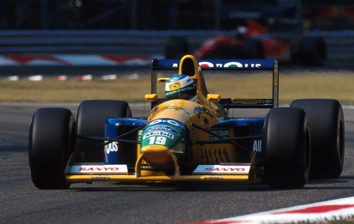
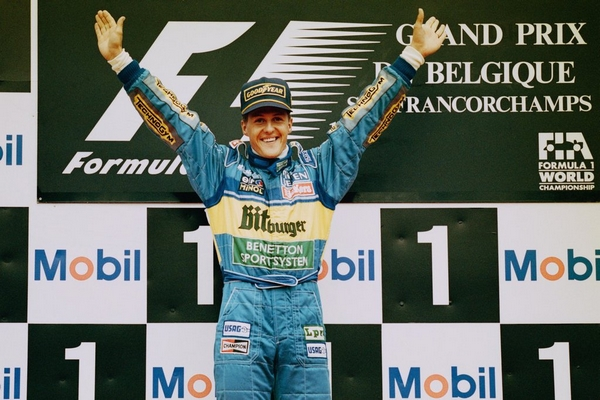

En 1991, Mercedes cherche à placer ses jeunes protégés en Formule 1, et en priorité Michael Schumacher. Une occasion se présente quelques jours avant le Grand Prix de Belgique lorsque le pilote Belge Bertrand Gachot de l'écurie Jordan est retenu par la justice britannique à la suite d'une altercation avec un chauffeur de taxi londonien. Dès sa prise de contact avec la Jordan, Schumacher impressionne ses ingénieurs, on lui demanda même d'aller « moins vite ». Impression confirmée lors des essais du Grand Prix de Belgique disputé sur le sélectif tracé de Spa-Francorchamps, que Schumacher découvre. Qualifié sur la septième place de la grille devant son expérimenté équipier
Andrea De Cesaris, Schumacher n'a pourtant pas l'occasion de se mettre en évidence en course, son embrayage rendant l'âme au bout de quelques hectomètres. Mais, à l'époque, beaucoup de gens disaient qu'il aurait pu gagner à son premier Grand Prix après avoir vu son équipier se battre pour la victoire avec Ayrton Senna. Dans les jours qui suivent, Schumacher défraie la chronique en étant au centre d'un bras de fer juridique entre les équipes Jordan et Benetton pour son engagement. Dès le Grand Prix suivant en Italie, Schumacher se retrouve sous les couleurs de Benetton-Ford, où il confirme le potentiel entrevu lors de son premier Grand Prix. Après de Cesaris, c'est cette fois le triple champion du monde Nelson Piquet, il est vrai, démotivé et proche de la retraite, qui fait les frais de la tornade Schumacher. Dès sa première saison complète en Formule 1 en 1992, Schumacher s'affirme comme l'une des valeurs sûres du peloton. Troisième du championnat du monde (derrière les intouchables pilotes Williams-Renault Nigel Mansell et Riccardo Patrese, mais devant Ayrton Senna), il remporte sa première victoire en Formule 1 à l'occasion du Grand Prix de Belgique, tout juste un an après ses débuts. Confirmation en 1993, avec une deuxième victoire en Grand Prix, au Portugal, et la quatrième place au championnat.
Début 1994, eu égard à ses impressionnantes prestations lors des essais hivernaux, Schumacher est présenté comme le principal outsider d'Ayrton Senna au championnat. Le duel tant attendu entre les deux meilleurs pilotes du monde va pourtant tourner court, puisque après les deux premières manches de l'année remportées par Schumacher (grâce à une meilleure gestion des arrêts au stand au Brésil, et à l'accrochage entre Larini et Senna au Japon), Senna trouve la mort alors qu'il menait la course à Imola, lieu de la troisième épreuve de la saison. Face à une opposition clairsemée, Schumacher a alors le champ libre pour filer vers sa première couronne mondiale. C'est sans compter sur les ennuis de Schumacher et de Benetton avec le pouvoir sportif. À Silverstone, Schumacher, bien qu'ayant terminé second, est déclassé pour ne pas avoir obtempéré à une pénalité consécutive à une manœuvre illégale (dépassement) lors du tour de formation.
Cela lui vaudra une suspension de deux Grands Prix pour non-respect du drapeau noir. Puis, en Belgique, il est disqualifié (il avait terminé premier), les commissaires ayant constaté une usure excessive de la planche de bois située sous la voiture. Ces différents avatars permettent à l'inattendu Damon Hill, qui endosse avec courage le rôle de pilote Williams numéro 1 depuis la disparition de Senna, de revenir dans la lutte pour le titre. Schumacher doit ainsi attendre l'ultime course de l'année en Australie pour décrocher le titre mondial, titre qui se jouera sur un accrochage avec Damon Hill. Ce dernier était sur le point de le dépasser et de lui prendre le titre mondial puisque l'Allemand venait de partir à la faute et de heurter un muret de béton. Mais malgré ce final chaotique, Schumacher est, avec huit succès (Brésil, Pacifique, St-Marin, Monaco, Canada, France, Hongrie et Europe) en quatorze courses, l'incontestable pilote de l'année.
Saison 1995 : Au cours de la première course, Damon Hill, alors en tête, est victime d'un problème mécanique, et Schumacher s'impose devant David Coulthard. Les deux hommes seront un temps disqualifiés pour cause d'essence non conforme, mais la FIA les blanchira. Pour le retour de la F1 en Argentine, Hill prend sa revanche et s'impose. Il récidivera à Imola, alors que Schumacher est violemment sorti de la piste alors qu'elle s'asséchait. À Barcelone, les Benetton de Schumacher et Johnny Herbert triomphent, et à Monaco, l'Allemand profite des ravitaillements pour passer devant l'Anglais et s'imposer. À Montréal, Jean Alesi remporte sa seule victoire, profitant des soucis techniques des favoris. À Magny-Cours, Schumacher devance Hill, mais à Silverstone, les deux hommes s'accrochent et Herbert en profite pour remporter sa première victoire.
À Hockenheim, Schumacher remporte sa première victoire à domicile, profitant de la sortie de Hill dans le premier tour. L'Anglais fait un cavalier seul en Hongrie, alors que Schumacher est victime de son moteur. En Belgique, l'Allemand s'impose en partant seizième sur la grille. Il a profité de la pluie et du safety car pour passer devant Hill au terme d'un duel époustouflant. En Italie, Schumacher et Hill s'accrochent à nouveau, Alesi est victime d'incidents mécaniques, Coulthard se sort dans le tour de formation, et Herbert s'impose à nouveau. Au Portugal, Coulthard remporte lui aussi sa première victoire. Pour le retour de la Formule 1 au Nurburgring, Schumacher s'impose au terme d'une course rendue piégeuse par la pluie. Hill est sorti, et Alesi ne peut résister au retour de l'Allemand en fin de course. À Aïda, Schumacher est sacré champion 1995 après sa victoire devant Coulthard. Il fait de même à Suzuka sous la pluie. À Adelaïde, Hill profite de l'accrochage Schumacher-Alesi et de la sortie de Coulthard pour remporter sa quatrième victoire de la saison.